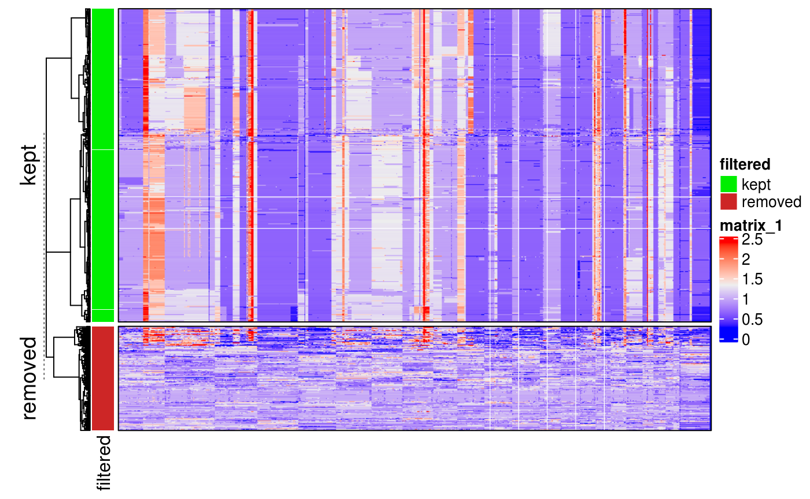

tutorial.RmdCopyKit provides a toolkit for the analysis of single-cell copy number datasets. It includes functions to read data from Varbin or 10X CNA datasets.
A common workflow with CopyKit consists in reading the dataset and using to filter the noisy cells out, clustering and plotting heatmaps for further analysis.
Datasets generated with the varbin pipeline can be read with the function readVarbinCNA(). It creates an S4 class scCNA from the output directory of the copy number pipeline. readVarbinCNA() searches for the uber*.seg uber.bin and uber.ratio files in the provided directory.
The scCNA object will contain 3 different assays: segment ratios, ratios and bincounts where each bin is row and each sample (cell) is a column.
CopyKit stores the genomic ranges as a GRanges object containing chromosome number, start coordinate, end coordinate and absolute genomic position. Each row represents the coordinates for one bin.
## Importing segment ratios.## Importing ratios.## Importing bin counts.## class: scCNA
## dim: 12205 1442
## metadata(0):
## assays(3): segment_ratios ratios bin_counts
## rownames(12205): 1 2 ... 12204 12205
## rowData names(1): abspos
## colnames(1442): tn20_2_s2_c10_s394_r1_001
## tn20_2_s2_c11_s395_r1_001 ... tn20_s6_c382_s2302_r1_001
## tn20_s6_c383_s2303_r1_001
## colData names(1): sample
## reducedDimNames(0):
## spikeNames(0):
## rowRanges has: 12205 rangesCells with low quality can be easily filtered with filterCells().
filterCells() uses a k-nearest-neighbor approach to remove cells with random CNA profiles, largely due to noise.
CopyKit automatically outputs a heatmap so you can visually assess if the filtering performed as expected
It is possible to control how strict the filtering will be by changing the argument resolution. Ex: filterCells(resolution = 0.9)
## Warning: Setting row names on a tibble is deprecated.
## Warning: Setting row names on a tibble is deprecated.
## Warning: Setting row names on a tibble is deprecated.## Calculating correlation matrix.## Adding information to metadata. Access with SummarizedExperiment::colData(scCNA).## Plotting heatmap.## Your dataset has: 1442 Cells. Plotting heatmap may take a long time with large number of cells. Set number of threads with n_threads for parallel processing if possible to speed up.## Done.
The information is store as metadata and can be accessed with SummarizedExperiment::colData().
## DataFrame with 6 rows and 2 columns
## sample filtered
## <character> <character>
## tn20_2_s2_c10_s394_r1_001 tn20_2_s2_c10_s394_r1_001 kept
## tn20_2_s2_c11_s395_r1_001 tn20_2_s2_c11_s395_r1_001 kept
## tn20_2_s2_c12_s396_r1_001 tn20_2_s2_c12_s396_r1_001 removed
## tn20_2_s2_c13_s397_r1_001 tn20_2_s2_c13_s397_r1_001 removed
## tn20_2_s2_c14_s398_r1_001 tn20_2_s2_c14_s398_r1_001 removed
## tn20_2_s2_c19_s403_r1_001 tn20_2_s2_c19_s403_r1_001 kept